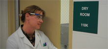
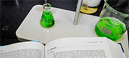

Partners across Missouri's Tech-44 corridor and central Missouri.
Missouri Center for Advanced Power Research
Battery research and workforce development rooted in Missouri.
MOCAP brings together universities, industry partners, and regional development organizations to advance electrochemical storage research, support emerging battery technologies, and educate the next generation of technical talent.
Square feet of facility space dedicated to battery research and testing.
Missouri universities contributing research, curriculum, and distance learning.
Why MOCAP exists
Research access, practical training, and statewide collaboration.
The legacy site positioned MOCAP as a public-private effort created with support from the Missouri Legislature and the Missouri Department of Economic Development to expand battery and power storage opportunities in Missouri.
With six partners located in Missouri's Tech-44 Corridor and one in central Missouri, MOCAP focuses on research and development of advanced battery and power technologies while educating a high-tech workforce for the future.
Missouri's research assets span advanced manufacturing, agriculture, life sciences, and engineering. MOCAP's role is to connect that statewide capacity to 21st century battery innovation through facility access, technical assistance, and university-led education.
Located near EaglePicher Technologies in Joplin, the partnership gives researchers direct proximity to a world leader in battery technology while also giving students hands-on exposure to electrochemistry and advanced power systems.
“The storage of energy is quickly becoming a major focal point around the world. MOCAP and our Missouri partners are positioned to address the need.”
Former Missouri Governor Jay Nixon
Current lab note from the legacy site
The lab was listed as in use until February 15, with hotel discounts available for researchers. This should be updated by the organization before a public relaunch.
Primary sections
The core pages rebuilt as static HTML.
This draft keeps the original site structure but reworks it into a cleaner, maintainable layout with local images and no WordPress dependency.
About
Mission and background
Overview of the partnership, its state support, and its role in advanced power research.

Facility
Research tools and access
Joplin-based facility details, equipment highlights, leasing options, and support resources.

Education
Courses and workforce development
Distance learning, certificate options, and sample course offerings pulled from the current site.

Partners
Industry and university network
Profiles of MOCAP's university, industry, and economic-development collaborators.
Archived updates
Latest posts from the legacy site.
The old WordPress site only exposed two news entries. They are reproduced here as static summaries so nothing depends on the old database.
December 24, 2012
New Certification Available
Missouri State University in Springfield announced a certification program focused on materials study, with an emphasis on battery manufacturing materials and related training opportunities.
Legacy contact listed: Tamera Jahnke, Department of Technology Transfer, Missouri State University.
December 22, 2012
New Test Equipment Arrives
The site announced that an Arbin Instruments multi-channel cell charge/discharge cycle tester had been placed into operation for multi-cell cycling and evaluation work.
This equipment also appears throughout the research facility description on the original site.